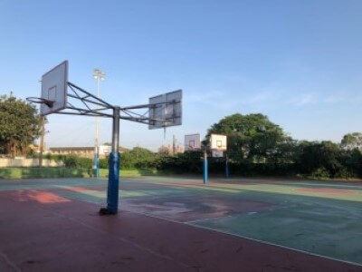
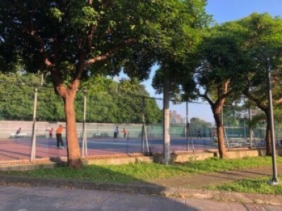
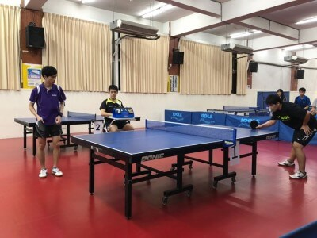
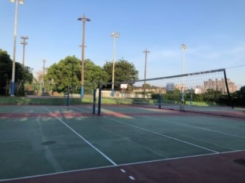
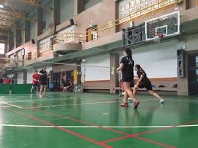
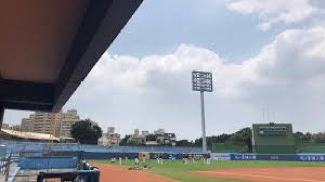

|  | 中原大學籃球場分為室外與室內，室內只要逼學生證方可進入，而室外皆對外開放。 |
|  | 中原大學的網球場週一至週五：上午 5:30~8:00、下午 17:10~18:50 週六與週日：上午 5:30~9:00、下午 16:00~18:50 本時段內持有個人網球證者，使用 A、B 球場；本校學生未持有個人網球證者，憑學生證進場，使用 C、D 球場。 |
|  | 中原大學的桌球室位於體育館一進去的左手邊走到底的地下室，只要逼學生證進去體育館便可以使用。 |
|  | 中原大學的排球場分為室內和室外，室內在體育館籃球場的右側，而室外的分為前場和後場，和籃球場一樣。 |
|  | 中原大學的羽毛球場在體育館一進去籃球場的左側，有提供羽毛球供人使用。 |
|  | 中原大學的棒球場在操場的中央。 |